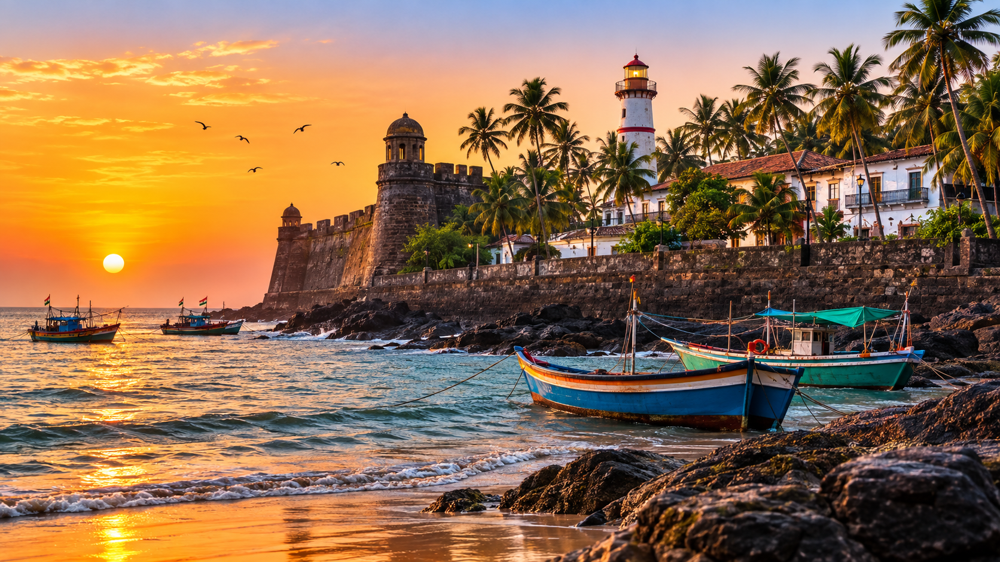

01
Dudhni Lake
A serene reservoir on the Madhavganga River surrounded by forested hills, famous for jet skiing, kayaking, and houseboat stays.

Discover a unique western coastal enclave — monumental Portuguese stone fortresses, golden crescent beaches of Diu, serene lake water sports in Silvassa, and vibrant tribal heritage.
Explore the Territory ↓Dadra and Nagar Haveli and Daman and Diu is a coastal Union Territory spanning lush inland forests and sea-kissed historic enclaves along India's western shores.
From exploring the green hills and watersports of Dudhni Lake in Silvassa to walking through the ancient bastions of Moti Daman Fort and relaxing on Nagoa Beach in Diu, this territory offers a multi-faceted escape.
Coastal fortresses, pristine island beaches, and scenic forest lakes across the territory.
A serene reservoir on the Madhavganga River surrounded by forested hills, famous for jet skiing, kayaking, and houseboat stays.

A sprawling 16th-century Portuguese fortress featuring high stone ramparts, historic churches, and a picturesque seaside lighthouse.

An imposing sea-facing coastal stronghold built by the Portuguese, complete with stone bastions, massive iron cannons, and panoramic ocean vistas.

A scenic, gentle crescent-shaped beach in Diu lined with swaying palm trees, calm shallow waters, and vibrant seaside activities.
The culinary tradition blends Gujarati vegetarian staples with Portuguese-influenced coastal seafood delicacies, coconut milk curries, and tangy local spices.

Centuries of Portuguese rule reflected in historic churches, seaside fortifications, distinct Latin music, and coastal architecture.
Indigenous Warli, Dhodia, and Kokna tribal communities in Dadra & Nagar Haveli preserving folk dances like Tarpa and traditional handicrafts.
Lively seaside festivals, boat races, and a relaxed beachside lifestyle combining Gujarati and Maharashtrian cultural influences.
Geometric tribal wall art using white rice paste on mud backgrounds, depicting nature, harvesting, and community celebration.
Discover all states, union territories, local food specialties, and centuries of living traditions.
← Back to Union Territories